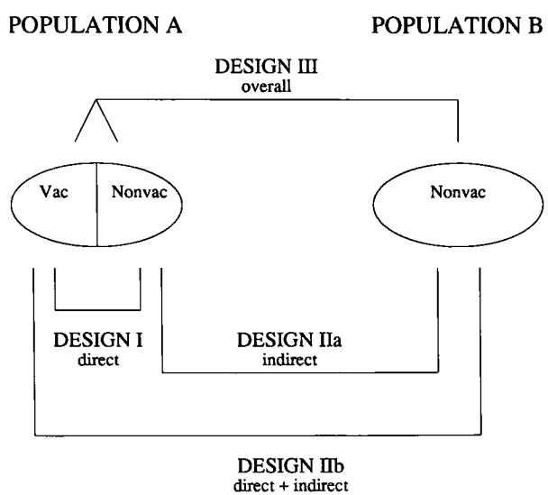
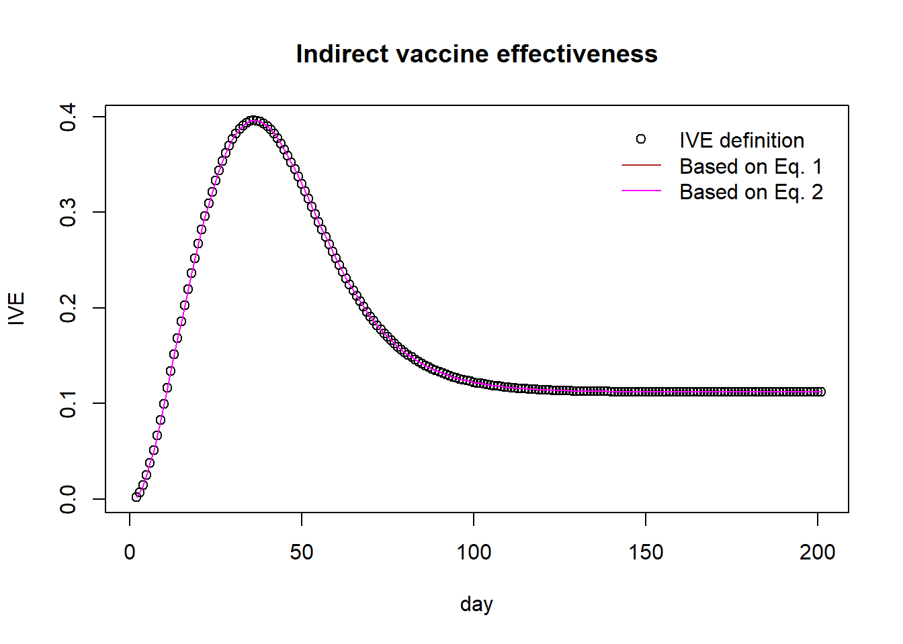
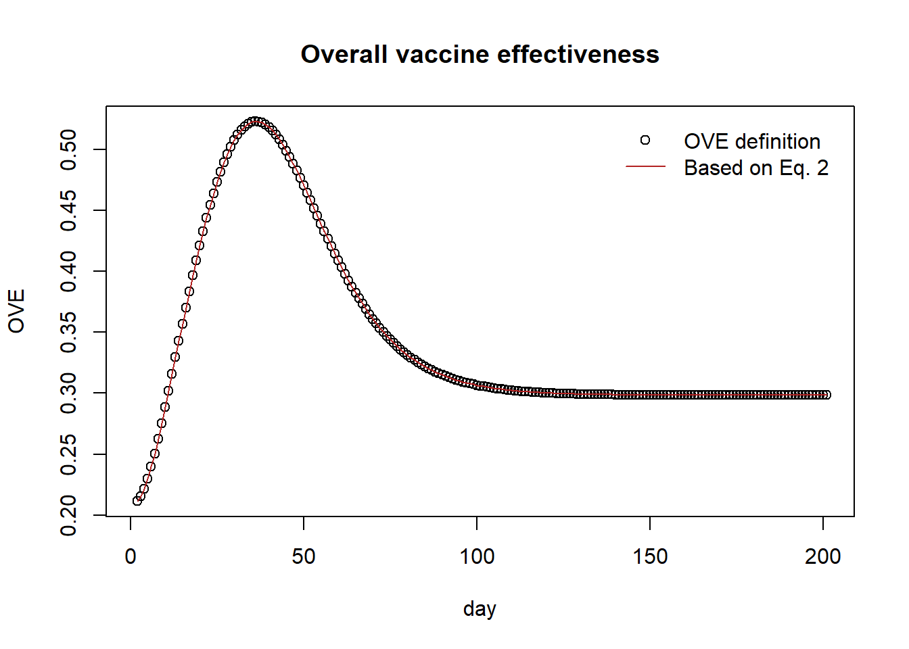
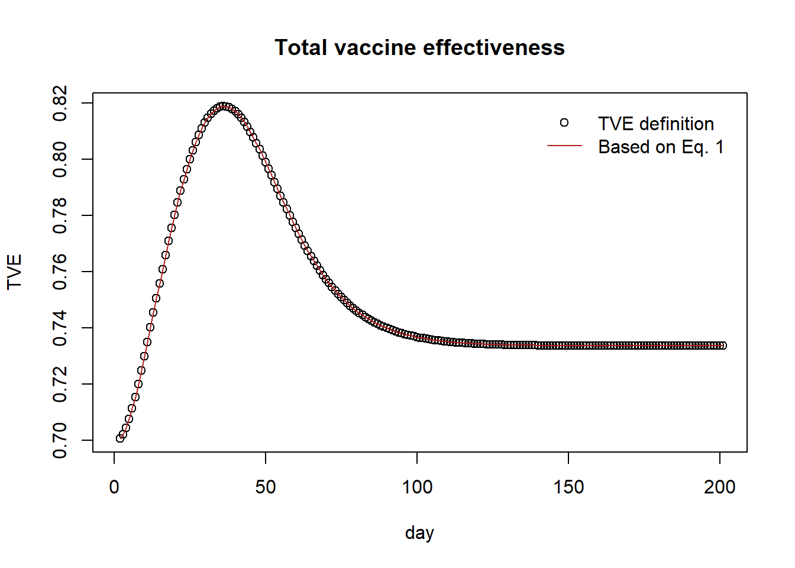

seir_2grp <- function(t, y, params) {
S0 <- y["S0"]; E0 <- y["E0"]; I0 <- y["I0"]; R0 <- y["R0"]; C0 <- y["C0"]
S1 <- y["S1"]; E1 <- y["E1"]; I1 <- y["I1"]; R1 <- y["R1"]; C1 <- y["C1"]
beta <- params["beta"]
epsilon <- params["epsilon"]
gamma <- params["gamma"]
# vaccinated and unvaccinated population are well mixed
muSE <- beta * (I1+I0) / (S1 + E1 + I1 + R1 + S0 + E0 + I0 + R0)
muEI <- epsilon
muIR <- gamma
dS0 <- - muSE*S0
dE0 <- muSE*S0 - muEI*E0
dI0 <- muEI*E0 - muIR*I0
dR0 <- muIR*I0
dC0 <- muEI*E0 ## cumulative symtom onset
dS1 <- - muSE*S1
dE1 <- muSE*S1 - muEI*E1
dI1 <- muEI*E1 - muIR*I1
dR1 <- muIR*I1
dC1 <- muEI*E1 ## cumulative symtom onset
return(list(c(dS0,dE0,dI0,dR0,dC0,dS1,dE1,dI1,dR1,dC1)))
}Vaccine effectiveness
SEIR
vaccine efficacy
direct
indirect
total
overall
Vaccine efficacy and effectiveness
Vaccine efficacy and effectiveness (VE) is generally estimated as one minus some measure of relative risk (RR) in the vaccinated group compared to the unvaccinated group Halloran et al.:
\[ \text{VE} = 1 - \text{RR} \]
RR measures may include relative infection probability given exposure, hazard ratio, or the ratio of cumulative incidence (or attack rate). I will explain different effects of the vaccine using the cumulative incidence (\(C\)) measure, as outlined in the Study design for dependent happenings.

In population \(A\), a fraction, \(f\), of the population was vaccinated (denoted as \(1\)) and the rest, \(1-f\), of the Population A remains unvaccinated (denoted as \(0\)). In Population \(B\), no one was vaccinated. I will use \(C_{A0}\) and \(C_{A1}\) to denote cumulative incidence, \(C\), in the unvaccinated and vaccinated individuals of Population \(A\). Similarly, \(C_{B0}\) will denote the cumulative incidence in the unvaccinated population \(B\).
Vaccine effectiveness (VE) can be divided into four different measures: direct, indirect, total, and overall VE, which are denoted as DVE, IVE, TVE, and OVE, respectively.
\[ \text{DVE} = 1 - \frac{C_{A1}}{C_{A0}},~ \text{IVE} = 1 - \frac{C_{A0}}{C_{B0}},~ \text{TVE} = 1 - \frac{C_{A1}}{C_{B0}},~ \text{OVE} = 1 - \frac{f C_{A1}+(1-f) C_{A0}}{C_{B0}}. \]
Given the above equations, the following relationships hold:
\[ \text{IVE} = 1-\frac{1-\text{TVE}}{1-\text{DVE}},~ \tag{1}\]
\[\text{OVE} = 1-\left(f\left(1-\text{TVE}\right)+(1-f)\left(1-\text{IVE}\right)\right)\] TVE may be replaced using IVE and DVE as below.
\[\text{OVE} = 1-\left(f\left(1-\text{DVE})(1-\text{IVE}\right)+(1-f)\left(1-\text{IVE}\right)\right) \tag{2}\]
I will illustrate the different metrics of VE using simple \(SEIR\) model simulations.
The model, seir_2grp, includes two subgroups, which will be used to differentiate vaccinated and unvaccinated populations.
Population A
A fraction \(f\) of population A received the vaccine, with vaccine efficacy denoted as VE. Vaccination is implemented using an all-or-nothing approach, meaning a fraction of the vaccine recipients, \(Nf\text{VE}\), are completely protected from infection. Here, \(N\), \(f\), and VE represent the population size, the fraction of the population that is vaccinated, and vaccine efficacy, respectively. In the SEIR model, we can mimic the vaccination scenario by setting the initial population size for the \(R\) compartment to \(Nf\text{VE}\).
N <- 1
tend <- 200
beta <- 2.5/4.5
epsilon <- 1/5.2
gamma <- 1/4.5
params <- c(beta=beta, epsilon=epsilon, gamma=gamma)
VE <- 0.7 # vaccine efficacy on susceptibility
f <- 0.3 # vacccine coverage proportion
N0 <- N*(1-f) # unvaccinated population
N1 <- N*f # vaccinated population
pop_A <- c(N0=N0, N1=N1)
y0_A <- c(S0=N0, E0=0, I0=0.01, R0=0, C0=0,
S1=N1*(1-VE), E1=0, I1=0.0, R1=N1*VE, C1=0)
tend <- 200
times <- seq(from=0, to=tend, by=1)
out <- deSolve::ode(y=y0_A, times=times, func=seir_2grp, parms=params)
pop_A_out <- as.data.frame(out)Population B
No one in the population is vaccinated.
pop_B <- c(N0=N)
# no need for the vaccinated group
y0_B <- c(S0=pop_B[["N0"]], E0=0, I0=0.01, R0=0, C0=0,
S1=0.0, E1=0, I1=0.0, R1=0.0, C1=0)
out <- deSolve::ode(y=y0_B, times=times, func=seir_2grp, parms=params)
pop_B_out <- as.data.frame(out) Let’s compute the four VE measures based on the cumulative incidence.
(DVE <- 1 - (pop_A_out[tend,"C1"]/pop_A[["N1"]])/(pop_A_out[tend,"C0"]/pop_A[["N0"]]))[1] 0.7(IVE <- 1 - (pop_A_out[tend,"C0"]/pop_A[["N0"]])/(pop_B_out[tend,"C0"]/pop_B[["N0"]]))[1] 0.1118712(OVE <- 1 - ((1-f)*pop_A_out[tend,"C0"]/pop_A[["N0"]] + f*pop_A_out[tend,"C1"]/pop_A[["N1"]])/ (pop_B_out[tend,"C0"]/pop_B[["N0"]]))[1] 0.2983782(TVE <- 1 - (pop_A_out[tend,"C1"]/pop_A[["N1"]])/(pop_B_out[tend,"C0"]/pop_B[["N0"]]))[1] 0.7335613Let’s compare the VE metrics using the equations derived above (Equation 1 and Equation 2).
(IVE == 1 - (1-TVE)/(1-DVE))[1] TRUE(OVE == 1 - (f*(1-TVE)+(1-f)*(1-IVE)))[1] TRUE(IVE == 1 - (1 - OVE - f*(1-TVE))/(1-f))[1] TRUE(TVE == 1 - (1-DVE)*(1-IVE))[1] TRUELet’s examine the dynamics of the four VE measures, where each metric is computed based on the cumulative incidence at each point in time.
dve <- 1 - (pop_A_out[,"C1"]/pop_A[["N1"]])/(pop_A_out[,"C0"]/pop_A[["N0"]])
ive <- 1 - (pop_A_out[,"C0"]/pop_A[["N0"]])/(pop_B_out[,"C0"]/pop_B[["N0"]])
ove <- 1 - ((1-f)*pop_A_out[,"C0"]/pop_A[["N0"]] + f*pop_A_out[,"C1"]/pop_A[["N1"]])/ (pop_B_out[,"C0"]/pop_B[["N0"]])
tve <- 1 - (pop_A_out[,"C1"]/pop_A[["N1"]])/(pop_B_out[,"C0"]/pop_B[["N0"]])plot(ive, pch=1, main="Indirect vaccine effectiveness", xlab="day", ylab="IVE")
lines(1 - (1-tve)/(1-dve), col="firebrick")
lines(1 - (1 - ove - f*(1-tve))/(1-f), col="magenta")
legend("topright",
legend=c("IVE definition","Based on Eq. 1","Based on Eq. 2"),
col = c("black", "firebrick","magenta"),
pch = c(1, NA, NA),
lty = c(NA, 1, 1),
bty = "n",
cex = 1.0,
text.col = "black",
horiz = F ,
inset = c(0.02,0.02))
plot(ove, pch=1, main="Overall vaccine effectiveness", xlab="day", ylab="OVE")
lines(1 - (f*(1-tve)+(1-f)*(1-ive)), col="firebrick")
legend("topright",
legend = c("OVE definition","Based on Eq. 2"),
col = c("black", "firebrick"),
pch = c(1, NA),
lty = c(NA, 1),
bty = "n",
cex = 1.0,
text.col = "black",
horiz = F ,
inset = c(0.02,0.02))
plot(tve, pch=1, main="Total vaccine effectiveness", xlab="day", ylab="TVE")
lines(1 - (1-dve)*(1-ive), col="firebrick")
legend("topright",
legend = c("TVE definition","Based on Eq. 1"),
col = c("black", "firebrick"),
pch = c(1, NA),
lty = c(NA, 1),
bty = "n",
cex = 1.0,
text.col = "black",
horiz = F ,
inset = c(0.02,0.02))